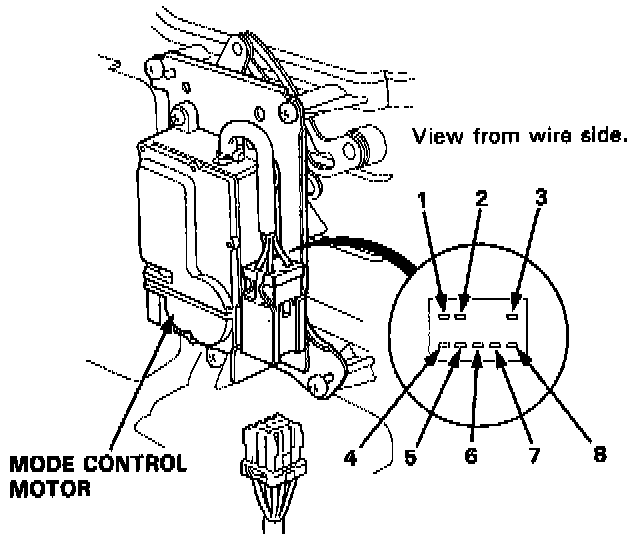

Component Test

1. Connect battery power to the No. 3 terminal of the mode control motor and connect ground to the No. 2 terminal.
2. Using a jumper wire, short the No. 1 terminal individually to the No. 4, No. 5, No. 6, No. 7, and No. 8 terminals, in that order.
- Each time the short circuit is made, the mode control motor should run smoothly and stop.
NOTE: If the mode control motor does not run when shorting the first terminal, short that terminal again after shorting the other terminals. The mode control motor is normal if it runs when shorting the first terminal again.
3. If the mode control motor does not run in step 2, remove it, and check the mode control linkage and doors for smooth movement. If the mode control linkage and doors move smoothly, replace the mode control motor.